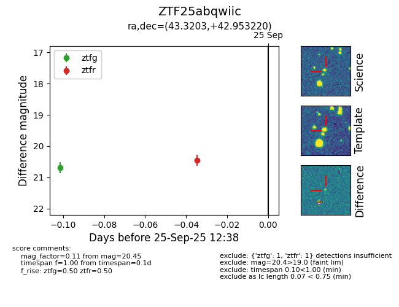

FINK: ZTF25abqwiic
Lasair: ZTF25abqwiic
ALeRCE: ZTF25abqwiic
ZTF25abqwiic (ztf,fink)
equatorial (ra, dec) = (43.3203,+42.95322)
galactic (l, b) = (145.4695,-14.52342)

last ztfg=20.69, ztfr=20.45
1 ztfg, 1 ztfr detections